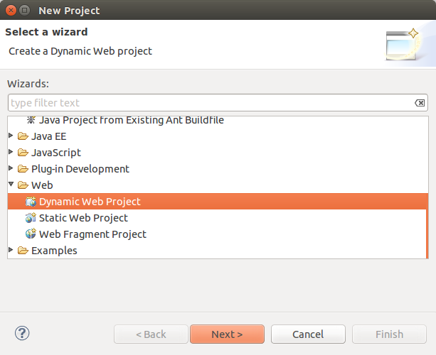
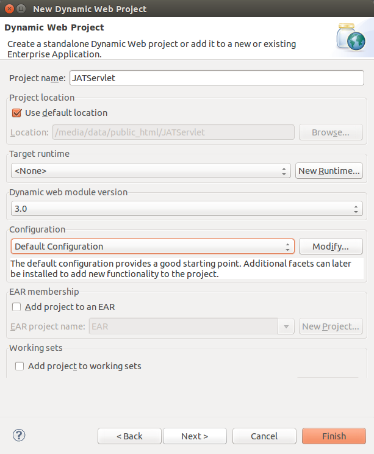

Follow the same steps as in
Downloading JAT through Eclipse and Git
witht he following exceptions:
the URI is
https://github.com/atmelino/JATServlet.git
make sure to create a "Dynamic Web Project"

and use a different project name:
